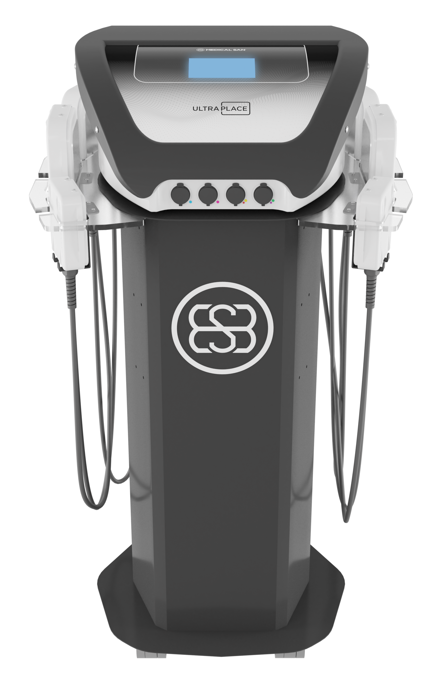

ULTRAPLACE - Ultrassom de Placas Para Grandes Áreas
High Intense Therapy Ultrasound é o conceito de otimização de tempo associado a dosimetrias elevadas no modo estacionário, proporcionando tratamento simultâneo em grandes áreas corporais. Especializações do Ultraplace: Frequência de 3MHz, 1MHz e 650 Khz; Modo Pulsado em 10, 20 e 50%, modulação do pulso em 16, 48, 100Hz; Potência até 70W, dose ajustável 0,1até 4,4W/cm2.
